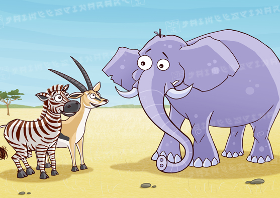
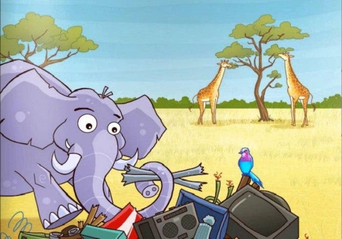

El Elefante Fotógrafo
Había una vez un elefante que quería ser fotógrafo. Sus amigos se reían cada vez que le oían decir aquello: - Qué tontería - decían unos- ¡no hay cámaras de fotos para elefantes! - Qué pérdida de tiempo -decían los otros- si aquí no hay nada que fotografíar... Pero el elefante seguía con su ilusión, y poco a poco fue reuniendo trastos y aparatos con los que fabricar una gran cámara de fotos.

Tuvo que hacerlo prácticamente todo:
desde un botón que se pulsara con la trompa, hasta un objetivo del tamaño del ojo de un elefante, y finalmente un montón de hierros para poder colgarse la cámara sobre la cabeza.
Así que una vez acabada, pudo hacer sus primeras fotos, pero su cámara para elefantes era tan grandota y extraña que paracecía una gran y ridícula máscara, y muchos se reían tanto al verle aparecer, que el elefante comenzó a pensar en abandonar su sueño.. Para más desgracia, parecían tener razón los que decían que no había nada que fotografiar en aquel lugar...
Pero no fue así. Resultó que la pinta del elefante con su cámara era tan divertida, que nadie podía dejar de reir al verle, y usando un montón de buen humor, el elefante consiguió divertidísimas e increíbles fotos de todos los animales, siempre alegres y contentos, ¡incluso del malhumorado rino!; de esta forma se convirtió en el fotógrafo oficial de la sabana, y de todas partes acudían los animales para sacarse una sonriente foto para el pasaporte al zoo.Y colorin colorado, este cuento se ha acabado.